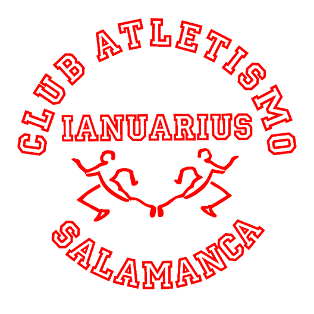
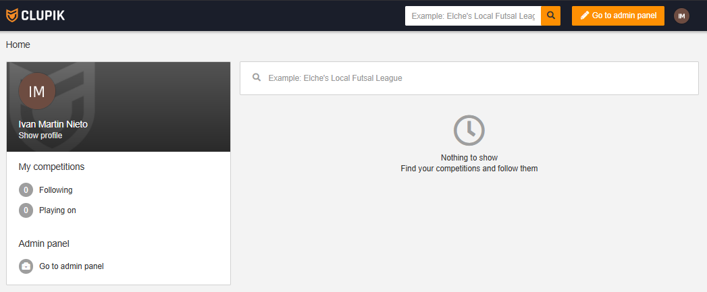
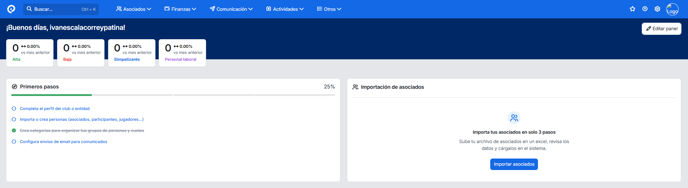
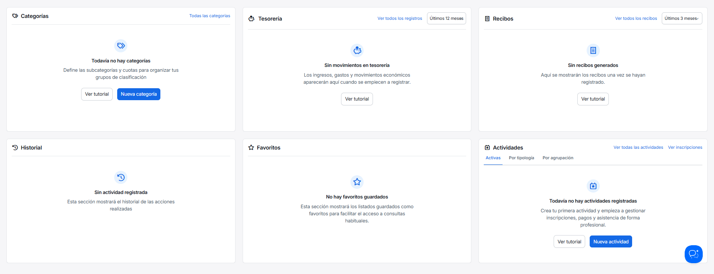
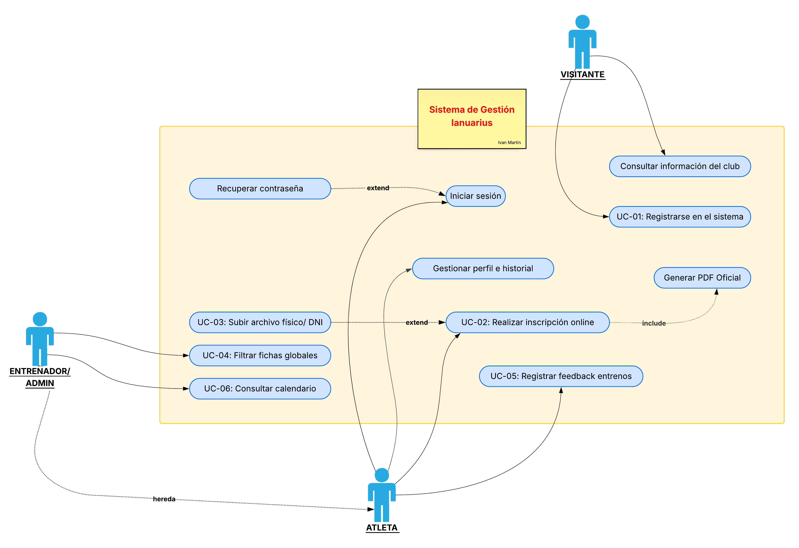

Ciclo Formativo de Grado Superior
Desarrollo de Aplicaciones Web
I.E.S. «Venancio Blanco» SALAMANCA
TUTOR
Serafina Martín Marcos
AUTOR
Iván Martín Nieto
Licencia
Esta obra está bajo una licencia Reconocimiento-Compartir bajo la misma licencia 3.0 España de Creative Commons. Para ver una copia de la licencia, visite http://creativecommons.org/licenses/by-sa/3.0/es/ o envíe una carta a Creative Commons, 171 Second Street, Suite 300, San Francisco, California 94105, USA.
Índice de Contenido
- Introducción y Justificación
- Definición del Sistema
- Diseño Tecnológico y Arquitectura
- Planificación y Metodología
- Desarrollo e Implementación
- Pruebas y Control de Calidad
- Conclusiones y Futuro
- Referencias y bibliografía
- Glosario de Términos y Acrónimos
- Anexos
Índice de Figuras
- Figura 1. Logo Ianuarius
- Figura 2. Logo Venancio Blanco
- Figura 3. Interfaz de competiciones de Clupik
- Figura 4. Interfaz de gestión de Playoff Informática
- Figura 5. Funcionalidades de Playoff Informática
- Figura 6. Diagrama de Casos de Uso del Sistema
- Figura 7. Diagrama de Gantt con la previsión del proyecto
Índice de Tablas
- Tabla 1. Costes de Hardware y Software
- Tabla 2. Costes de Personal (Desarrollo)
- Tabla 3. Costes de Mantenimiento Anual
- Tabla 4. Análisis SMART: Objetivo General
- Tabla 5. Análisis SMART: Objetivos Funcionales
- Tabla 6. Definición de Actores
- Tabla 7. Especificación de Casos de Uso
- Tabla 8. Requisitos Funcionales y No Funcionales
- Tabla 9. Requisitos de Información (IRQ)
- Tabla 10. Stack Tecnológico
- Tabla 11. Fases de Planificación (Gantt)
- Tabla 12. Glosario de Términos
1. Introducción y Justificación
1.1. Memoria Inicial
Aplicación web centrada en la gestión del club de atletismo Ianuarius, de forma que se digitalice su gestión.
En cualquiera de los casos, cabe destacar que el proyecto ha sido ampliamente pensado para el club homónimo al título de este, por lo que, para otros clubes, cabría la posibilidad de que haya funciones insuficientes o que, por el contrario, haya un exceso de estas.
1.2. Justificación
Por otra parte, gracias a esta transición al mundo digital, permitirá añadir funcionalidades que, en un entorno físico, sin esta aplicación, serían muy costosos, complicados o incluso imposibles de llevar a cabo, sobre todo teniendo en cuenta el gran número de atletas pertenecientes al club, de los cuales, su gran mayoría son menores, o lo suficientemente pequeños como para no estar capacitados para manejarse por sí mismos.
1.3. Oportunidad de Negocio
En cuanto a la oportunidad de negocio, este proyecto nace de la observación directa de una carencia tecnológica en el ámbito deportivo local. Los clubes de atletismo modestos no disponen de presupuestos holgados para contratar plataformas de gestión genéricas de alto coste. Además, la gran mayoría de estas plataformas están orientadas a deportes de equipo (como el fútbol o el baloncesto), obviando las necesidades específicas del atletismo: gestión de grandes volumenes de inscripciones individuales, control de marcas personales, categorías por edades muy acotadas y la burocracia específica de las federaciones (seguros médicos e impresos oficiales).
Ianuarius se presenta como una oportunidad de negocio orientada a cubrir este nicho: un software vertical, específico para atletismo, de bajo coste, evitando sistemas de suscripción y, centrado en resolver el "cuello de botella" burocrático de las inscripciones de menores de edad.
1.4. Estudio del Sector
Para evaluar la viabilidad y necesidad del proyecto, se ha realizado un análisis de las principales soluciones de software de gestión deportiva existentes en el mercado actual:
1.4.1. Clupik
Es una plataforma centrada fundamentalmente en la gestión de competiciones. Permite a los usuarios inscribirse en eventos deportivos, hacer un seguimiento de los mismos y, a nivel de administración, crear y organizar dichos torneos. Sin embargo, no está diseñada para cubrir la gestión burocrática interna del día a día de un club modesto. Carece de herramientas para la gestión de un club de atletismo (independientemente de sus dimensiones)

1.4.2. Playoff Informática
Es uno de los sistemas más potentes y consolidados. Permite la gestión de recibos y remesas bancarias con gran eficacia. El problema radica en que es una herramienta sobredimensionada ("overkill"); ofrece cientos de funcionalidades que un club modesto jamás usará, generando una curva de aprendizaje muy pronunciada para los entrenadores y padres y aumentando inecesariamente el precio del servicio al estar pagando funciones no utiles para el caso de un club pequeño de atletismo.


1.4.3. Necesidades reales no cubiertas (El hueco de Ianuarius)
Tras este análisis, se concluye que el sector adolece de una herramienta que satisfaga las siguientes demandas clave del Club Ianuarius:
Generación automatizada de burocracia: Ninguna de las alternativas genera de forma automática el PDF oficial de inscripción requerido por la Federación combinando los datos del usuario.
Seguimiento de sensaciones: Falta de un módulo sencillo donde el atleta pueda registrar su "feedback" post-entrenamiento en la pista.
Accesibilidad económica: Inexistencia de un sistema de bajo mantenimiento adaptado a la realidad financiera de los clubes pequeños.
1.5. Análisis de Viabilidad
1.5.1. Viabilidad Técnica
El proyecto es viable técnicamente dado que se desarrollará utilizando tecnologías sólidas y ampliamente documentadas (React, PHP 8.2 y MySQL 8.0). Sin embargo, al tratarse de un sistema que gestionará datos personales y fichas médicas de atletas (en su gran mayoría menores de edad), la viabilidad no solo reside en la capacidad de programación, sino en garantizar el estricto cumplimiento del RGPD y la LOPDGDD.
Para garantizar esta seguridad técnica, la aplicación se alojará en servidores ubicados dentro del Espacio Económico Europeo (EEE). Las contraseñas de los usuarios se almacenarán cifradas mediante funciones de hash. Respecto a los documentos altamente sensibles (como los PDF de las inscripciones generados y los escaneos de los DNI), se implementará un sistema de control de acceso en el backend (PHP). Los archivos se guardarán en directorios privados del servidor sin acceso público directo por URL, de forma que el sistema verificará primero el rol y la sesión del usuario antes de servir la descarga del documento.
1.5.2. Viabilidad Económica (Estimación de Costes)
Aunque el proyecto se desarrolla en un ámbito académico, a continuación se presenta una estimación del presupuesto como si se tratase de un encargo profesional para el Club Atletismo Ianuarius. Adicionalmente, se han calculado los costes periodicos necesarios para mantener el sistema en producción una vez finalizado el proyecto.
1.5.2.1. Costes de Hardware y Software
| Concepto | Descripción | Coste Estimado |
|---|---|---|
| Hardware | Amortización de equipo informático. | 250,00 € |
| Software IDE | Visual Studio Code, Obsidian. | 0,00 € (Free) |
| Entorno Servidor | XAMPP (Apache, MySQL, PHP). | 0,00 € (Free) |
| Diseño / UI | Figma (Plan gratuito), Tailwind CSS. | 0,00 € (Free) |
| Total Recursos | 250,00 € | |
1.5.2.2. Costes de Personal (Desarrollo)
| Fase | Horas Estimadas | Coste (18 € / h) |
|---|---|---|
| Análisis y Diseño | 40 h | 720,00 € |
| Desarrollo Backend y BBDD | 50 h | 900,00 € |
| Desarrollo Frontend y Vistas | 40 h | 720,00 € |
| Pruebas y Documentación | 20 h | 360,00 € |
| Total Desarrollo | 150 h | 2.700,00 € |
1.5.2.3. Costes de Mantenimiento Anual (Post-Desarrollo)
| Concepto | Descripción | Coste Anual |
|---|---|---|
| Dominio | Registro y renovación del dominio (ej. ianuarius.es). | 12,00 € / año |
| Hosting EEE | Servidor compartido avanzado o VPS básico en Europa. | 75,00 € / año |
| Certificado SSL | Let's Encrypt para cifrado de datos (HTTPS). | 0,00 € (Free) |
| Total Mantenimiento Anual | 87,00 € / año | |
Presupuesto Inicial Total (Desarrollo + Recursos): 2.950,00 € (Impuestos no incluidos).
2. Definición del Sistema
2.1. Objetivos del Proyecto
Siguiendo los criterios SMART (Específico, Medible, Alcanzable, Relevante y Temporal), se definen a continuación los objetivos del proyecto.
2.1.1. Objetivo General
| Concepto | Descripción | Análisis SMART |
|---|---|---|
| Propósito Principal | Desarrollar una plataforma web integral para la digitalización de la gestión del Club Atletismo Ianuarius (inscripciones, fichas y seguimiento). |
S: Digitalizar integralmente el proceso de inscripción y creación de fichas para el 100% de los atletas o sus tutores legales. M: Reducir el tiempo de gestión de las inscripciones manuales a menos de 3 minutos gracias a la vía digital. A: Desarrollable e implementable mediante la conexión de un formulario dinámico en React con un generador de PDF en el backend (PHP). R: Elimina por completo el uso de papel físico. Además, contempla y soluciona fricciones derivadas del factor humano y logístico: elimina la pereza o falta de tiempo para imprimir, esquiva las averías en impresoras domésticas, evita desplazamientos a copisterías y suprime los olvidos frecuentes de la inscripción física en casa o de las copias impresas del DNI. T: Totalmente funcional y desplegado para el inicio de la temporada 2026-2027 (y utilizable de ahí en adelante). |
2.1.2. Objetivos Funcionales
| ID | Módulo | Descripción | Justificación SMART | Prio. |
|---|---|---|---|---|
| OBJ-01 | Usuarios | Registro, Login y distinción de roles (Admin, Entrenador, Atleta). | S: Acceso seguro por credenciales. M: 3 roles diferenciados. T: Desarrollado entre la Semana 6 (Backend) y Semana 10 (Frontend). | Alta |
| OBJ-02 | Fichas | Subida de archivos escaneados para inscripciones físicas (legacy). | S: Upload de PDF/JPG. R: Soporte a inscripciones manuales. T: Operativo en la Semana 8 (Módulo de protección de archivos). | Alta |
| OBJ-03 | Fichas | Inscripción online con generación automática de PDF y envío por email. | S: Formulario a PDF automático. M: 0 errores de transcripción. T: Completado en la Semana 12 (Integración). | Media |
| OBJ-04 | Gestión | Filtros de búsqueda avanzada (Categoría, edad, prueba, marcas). | S: Filtrado SQL dinámico. T: Implementado entre la Semana 7 (Lógica servidor) y Semana 11 (Vistas). | Media |
| OBJ-05 | Atletas | Calendario de eventos y feedback de entrenamientos (sensaciones). | S: Calendario visual interactivo. R: Seguimiento deportivo. T: Integrado en la Semana 13 (Fase de validación). | Baja |
2.2. Definición de Actores
| ID: ACT-01 | Visitante |
|---|---|
| Descripción | Usuario no registrado que accede a la parte pública (portfolio informativo). |
| Permisos | Visualizar información básica del club (plazos de fichas, horarios, periodos de entreno, etc.). |
| ID: ACT-02 | Atleta |
|---|---|
| Descripción | Integrante del club registrado de forma oficial. |
| Permisos | Iniciar sesión, realizar inscripciones, acceder a su historial, editar inscripciones y registrar feedback de entrenamientos. |
| ID: ACT-03 | Entrenador (Administrador) |
|---|---|
| Descripción | Miembro del cuerpo técnico encargado de la gestión del club. |
| Permisos | Permisos de Atleta + visualizar todas las fichas, filtrar atletas (edad, categoría) y consultar el calendario global. |
2.3. Especificación Funcional
2.3.1. Diagrama de Casos de Uso

2.3.2. Especificación de Casos de Uso
| UC-01 | Registro y Autenticación |
|---|---|
| Actor | Visitante (pasa a ser Atleta/Entrenador) |
| Interés | Crear una cuenta segura, para acceder a un catálogo de funciones del club más extenso . |
| Precondición | No tener una cuenta previamente registrada con el email aportado. |
| Garantía | Datos almacenados (contraseñas cifradas) y sesión iniciada. |
| Flujo Básico | 1. El sistema solicita datos. 2. El sistema valida el formato. 3. El sistema crea la cuenta y autentica. |
| Excepciones | 2.a Email existente: El sistema avisa y ofrece recuperar contraseña. |
| UC-02 | Generar Inscripción Online |
|---|---|
| Actor | Atleta / Entrenador |
| Interés | Completar la ficha digitalmente y generar el documento oficial. |
| Precondición | Haber iniciado sesión (UC-01). |
| Garantía | PDF generado, guardado en el perfil y enviado por correo. |
| Flujo Básico | 1. Usuario accede al formulario. 2. Sistema solicita datos y subida de imágenes (DNI). 3. Sistema compila datos y genera el PDF. 4. Sistema envía el PDF al email. |
| Excepciones | 2.a Archivo no soportado: El sistema rechaza la imagen e indica formatos válidos (JPG/PNG). |
2.4. Requisitos del Sistema (SRS)
2.4.1. Requisitos Funcionales (RF)
| ID | Función | Descripción Detallada | Actor | CU | Prio. |
|---|---|---|---|---|---|
| RF-01 | Registro | El sistema permitirá crear una cuenta validando el email. | Visitante | UC-01 | Alta |
| RF-02 | Login | El sistema verificará credenciales contra la BBDD y asignará la sesión. | Atleta/Admin | UC-01 | Alta |
| RF-03 | Inscripción | El sistema generará un PDF automático a partir de los datos. | Atleta | UC-02 | Alta |
| RF-04 | Subida PDF | El sistema permitirá adjuntar archivos físicos escaneados (JPG/PDF). | Atleta | UC-03 | Media |
| RF-05 | Filtros | El sistema ordenará las fichas por categoría, fecha o edad. | Admin | UC-04 | Media |
| RF-06 | Generación PDF | El sistema generará ficha de inscripción en PDF en base a los datos aportados. | Atleta | UC-03 | Baja |
2.4.2. Requisitos No Funcionales (RNF)
| ID | Tipo | Descripción y Métrica |
|---|---|---|
| RNF-01 | Seguridad | Las contraseñas se almacenarán cifradas mediante hash en la BBDD. |
| RNF-02 | Rendimiento | La generación del PDF de inscripción habría de tardar menos de 5000ms. |
| RNF-03 | Disponibilidad | El sistema será responsivo (Mobile First) para uso en pistas de atletismo. |
2.4.3. Requisitos de Información (IRQ)
| ID: IRQ-01 | Información de Usuarios y Fichas |
|---|---|
| Descripción | El sistema debe almacenar permanentemente los datos de registro e inscripción. |
| Datos | • ID Usuario (PK) • Nombre, Apellidos, DNI, Email (Único), Contraseña (Hash) • Rol (Atleta o Entrenador/Admin) • Ruta del PDF generado |
2.5. Normativa y Legislación
Debido a que el sistema gestiona inscripciones de atletas (en su mayoría menores) y realiza un seguimiento de sus entrenamientos, el cumplimiento normativo es estricto:
- **RGPD y LOPDGDD:** Los datos se alojarán en servidores del EEE. Se requerirá consentimiento verificable de tutores legales para menores de 14 años.
- **Derecho al olvido:** Se podrá solicitar la eliminación de datos una vez el atleta inscrito abandone el club.
- **LSSI-CE y Accesibilidad:** Se incluirá un Aviso Legal con los datos del club. Se buscará cumplir con el nivel AA de las directrices WCAG 2.1.
- **Licencias:** Tecnologías libres (HTML, CSS, PHP, MySQL), Tailwind CSS (MIT) y librerías de generación de PDF (MIT/GPL).
3. Diseño Tecnológico y Arquitectura
3.1. Stack Tecnológico
Para el desarrollo de Ianuarius se ha seleccionado una arquitectura moderna separando el cliente del servidor, garantizando así una experiencia de usuario fluida y un mantenimiento seguro. Las tecnologías elegidas son las siguientes:

Frontend (Interfaz de usuario): React 18 y Tailwind CSS
Se empleará React (versión 18) junto con el framework de estilos Tailwind CSS. Se elige esta librería frente a un enfoque tradicional con PHP nativo para evitar interfaces estáticas. React permite desarrollar una aplicación web dinámica, fluida y con una experiencia de usuario superior, comportándose como una "Single Page Application" (SPA).

Backend (Lógica y Servidor): PHP 8.2
Se utilizará PHP en su versión 8.2. Se encargará de gestionar la lógica de negocio, la seguridad (protección de directorios), la autenticación y la creación de una API REST que se comunicará de forma asíncrona con el Frontend mediante formato JSON.

Base de Datos: MySQL 8.0
Se implementará MySQL (versión 8.0) para garantizar la persistencia de los datos estructurados y mantener la integridad relacional estricta entre los usuarios (atletas/entrenadores) y sus fichas médicas e inscripciones.
3.2. Arquitectura del Software
(Pendiente: Aquí explicaremos cómo se comunica React con PHP mediante la API REST).
3.3. Diseño de Datos
(Pendiente: Modelo Entidad-Relación y Tablas).
3.4. Diseño de Interfaz (UI/UX)
(Pendiente: Wireframes y colores).
4. Planificación y Metodología
4.1. Metodología de Trabajo
Para la ejecución de la plataforma Ianuarius, se ha optado por una Metodología Ágil basada en un modelo Scrum adaptado a un único desarrollador.
4.1.1. Desarrollo iterativo e incremental:
Permite tener versiones funcionales desde las primeras semanas, añadiendo módulos de forma progresiva.
4.1.2. Herramientas de gestión:
Se utilizará un tablero tipo Kanban (GitHub Projects) dividido en las columnas básicas: Backlog, In Progress, Testing y Done.
4.2. Planificación Temporal (Gantt)
El desarrollo se ha planificado en un bloque temporal de 15 semanas. Se ha optado por solapar parcialmente las fases de Backend y Frontend para optimizar el tiempo de integración.

| Fase | Tarea Principal | Duración | Semanas |
|---|---|---|---|
| 1. Análisis | Definición de actores, Casos de Uso y Requisitos. | 2 semanas | 1 – 2 |
| 2. Diseño | Diseño de BBDD, arquitectura y prototipos visuales. | 2 semanas | 3 – 4 |
| 3. Backend | Desarrollo MySQL, PHP 8.2, API REST. | 4 semanas | 5 – 8 |
| 4. Frontend | Maquetación responsiva con React y Tailwind. | 4 semanas | 6 – 9 |
| 5. Integración | Unificación API y Vistas Front. | 3 semanas | 10 – 12 |
| 6. Pruebas | Tests de validación y corrección de bugs. | 2 semanas | 13 – 14 |
| 7. Entrega | Redacción de memoria final y defensa. | 1 semana | 15 |
4.3. Guion de Trabajo
A continuación se detalla el "Roadmap" del proyecto, desglosando las fases de la planificación temporal en tareas técnicas específicas y asignadas por semanas, para garantizar un seguimiento exhaustivo del desarrollo:
Fase 1: Análisis y Diseño (Semanas 1 - 4)
Semana 1-2: Toma de requisitos, análisis de competencia y elaboración de diagramas de Casos de Uso.
Semana 3: Diseño del modelo Entidad-Relación y creación de los esquemas relacionales (MySQL).
Semana 4: Elaboración de wireframes y maquetado visual de la interfaz de usuario en Figma.
Fase 2: Backend y Base de Datos (Semanas 5 - 8)
Semana 5: Configuración del entorno (XAMPP), despliegue de la BBDD e implementación de la librería FPDF/TCPDF para la futura generación de documentos.
Semana 6: Desarrollo de la API REST (PHP 8.2) y creación de los endpoints básicos (Registro, Login) con cifrado de contraseñas.
Semana 7: Programación de la lógica de filtros de marcas deportivas y categorías por edades en el servidor.
Semana 8: Desarrollo del módulo de control de acceso y protección de directorios para los archivos PDF de los atletas (cumplimiento RGPD).
Fase 3: Frontend e Integración (Semanas 9 - 12)
Semana 9: Inicialización del proyecto en React 18, configuración del enrutamiento y aplicación de Tailwind CSS.
Semana 10: Maquetación de los paneles de control (dashboard del Entrenador y vista del Atleta).
Semana 11: Conexión asíncrona (Fetch/Axios) entre el Frontend y la API REST para el intercambio de datos JSON.
Semana 12: Integración del formulario dinámico de inscripciones con el generador de PDF del backend.
Fase 4: Pruebas y Despliegue (Semanas 13 - 15)
Semana 13: Ejecución de pruebas unitarias en formularios y validación de seguridad en la subida de archivos (DNI/Fotos).
Semana 14: Resolución de errores (testing continuo).
Semana 15: Despliegue en el servidor de producción (hosting), redacción final de los manuales y preparación de la defensa.
5. Desarrollo e Implementación
5.1. Organización real del trabajo
(Próximos Entregables)
5.2. Estructura del Proyecto
(Próximos Entregables)
5.3. Aspectos relevantes de la codificación
(Próximos Entregables)
5.4. Despliegue
(Próximos Entregables)
6. Pruebas y Control de Calidad
6.1. Plan de Pruebas
(Próximos Entregables)
6.2. Registro de Incidencias
(Próximos Entregables)
6.3. Validación de Requisitos
(Próximos Entregables)
7. Conclusiones y Futuro
7.1. Grado de cumplimiento de objetivos
(Próximos Entregables)
7.2. Dificultades y aprendizaje personal
(Próximos Entregables)
7.3. Posibles mejoras y líneas futuras del proyecto
(Próximos Entregables)
8. Referencias y bibliografía
A continuación se detallan las herramientas, recursos y fuentes de información utilizadas para el desarrollo y documentación de este proyecto:
Mermaid Live Editor: Herramienta web utilizada para la generación del Diagrama de Clases UML mediante renderizado de código. Disponible en: https://mermaid.live/
9. Glosario de Términos y Acrónimos
Este apartado define los conceptos técnicos y las siglas utilizadas a lo largo de la memoria para garantizar su correcta interpretación.
| Término / Acrónimo | Definición |
|---|---|
| API | (Application Programming Interface) Interfaz que permite que dos aplicaciones se comuniquen entre sí para intercambiar datos. |
| Backend | Parte de la aplicación que se ejecuta en el servidor y gestiona la lógica de negocio y la base de datos. |
| CRUD | (Create, Read, Update, Delete) Acrónimo de las cuatro funciones básicas de la gestión de datos. |